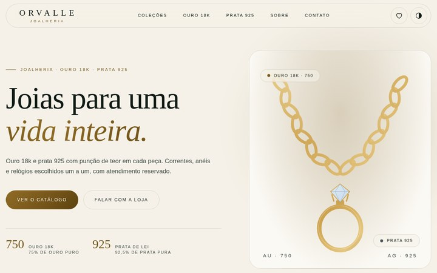
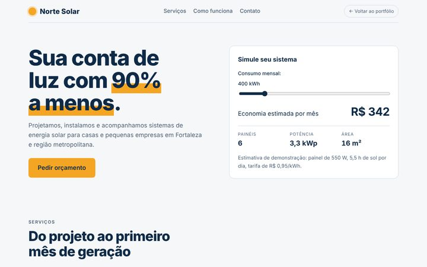
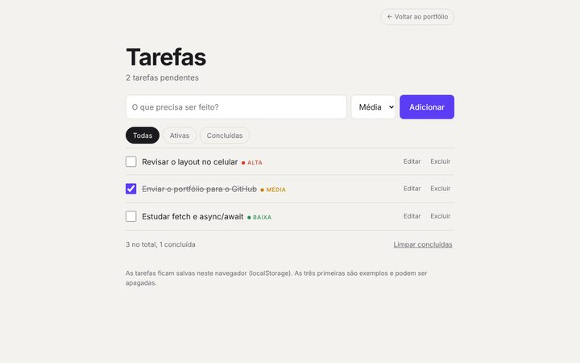
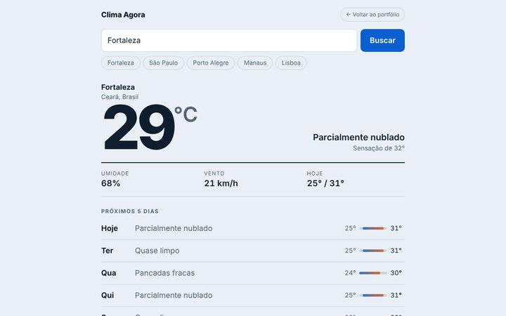
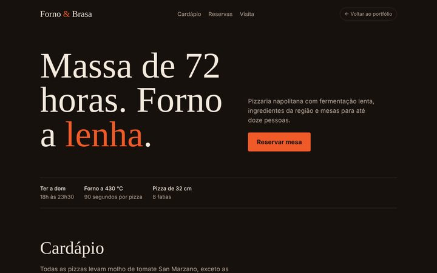
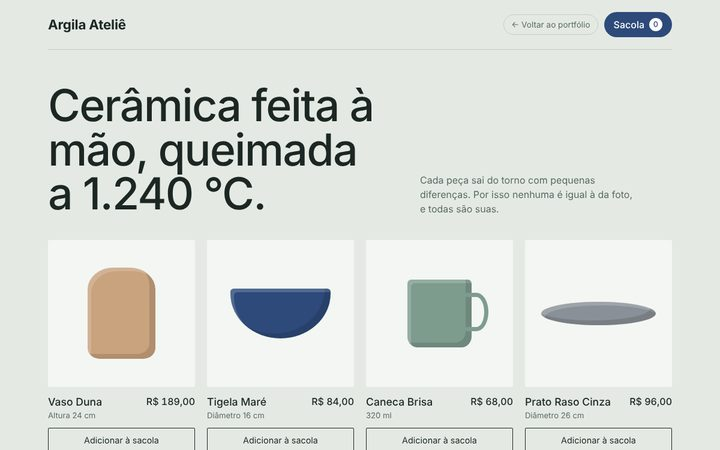
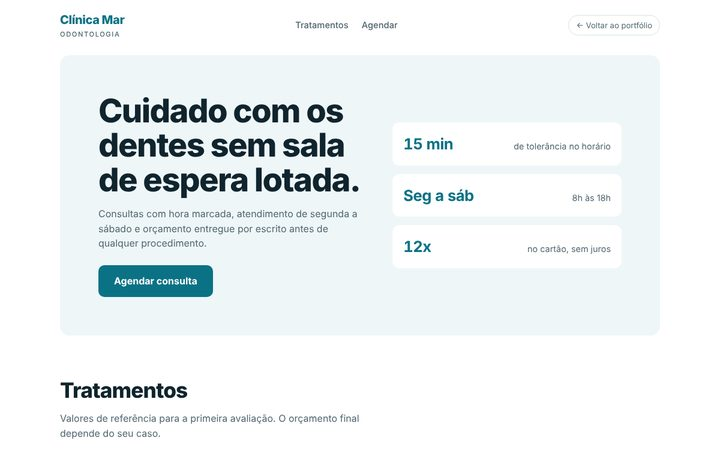

Orvalle Joias
Landing page de uma loja fictícia de joias e acessórios, com sistema de catálogo, sacola e meio de contato direto com a Loja. Layout responsivo.
Abrir projeto →Ver código

Desenvolvo sites institucionais, lojas virtuais e sistemas de agendamento. Cada projeto parte de uma pergunta simples: o que o visitante precisa fazer aqui?
Landing page de uma loja fictícia de joias e acessórios, com sistema de catálogo, sacola e meio de contato direto com a Loja. Layout responsivo.

Landing page de uma empresa fictícia de energia solar, com simulador de economia, serviços, etapas e formulário de contato. Layout responsivo.

Gerenciador para adicionar, concluir, editar e excluir tarefas, com prioridades, filtros e dados salvos no navegador.

Consulta uma API de previsão do tempo, com busca por cidade, previsão de 5 dias, estado de carregamento e tratamento de erros.

Site para pizzaria napolitana com cardápio filtrável por categoria e reserva de mesa com validação.

Loja virtual de cerâmica com sacola funcional, controle de quantidade, total em reais e barra de frete grátis.

Site institucional para clínica odontológica com agendador em passos: tratamento, dia, horário e dados do paciente.

Projetos de prática com empresas e dados fictícios. Cada um foi feito para treinar uma habilidade específica.
Candidato a estágio em Desenvolvimento de Sistemas. Técnico em Desenvolvimento de Sistemas pelo SENAI Centro, de Cascavel, Ceará.
Cinco anos de robótica competitiva: dois na FIRST LEGO League (FLL) e três na equipe Ironhide, da FIRST Tech Challenge (FTC), com programação dos robôs em Java, gestão das atividades da equipe e mentoria dos integrantes.
Agora aplico essa base em desenvolvimento de software: Java, JavaScript, Python, SQL e front-end. Os projetos desta página são exercícios de prática, e o código de cada um está no GitHub.